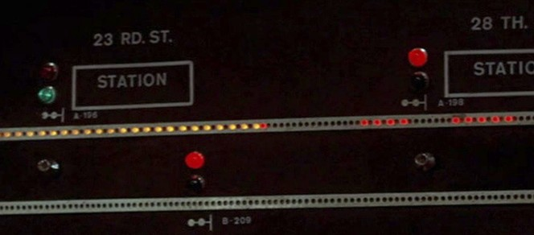

The Motorman Coffee Shop
Lunch from 11 A.M.
The Lunch Counter
Turkey & Swiss Hero
1.23
Sliced breast, shredded iceberg, tomato and mayonnaise on a long roll, wrapped tight.
Chicken Noodle Soup
.55
Simmered from a whole bird with carrot and celery. Saltines on the side.
Hot Pastrami on Rye
1.95
Hand sliced and steamed, with brown mustard and a sour pickle.
Grilled Cheese
.85
American on white, buttered and griddled golden, with sliced tomato.
The Fountain
Egg Cream
.35
Chocolate syrup, cold milk and a hard shot of seltzer.
Chocolate Malted
.65
Vanilla ice cream, malt and fudge syrup, spun thick.
The BarAFTER 4 P.M.
Hot Toddy
1.25
Whisky, honey, lemon and fresh ginger, topped with boiling water. Cinnamon stick.
Flu season special. Gesundheit!
We deliver, all floors

Call KLondike 5-0123. Command Center orders up inside the hour.

Prices subject to change. Minimum at tables, lunch hours, .75Form 123, 1974